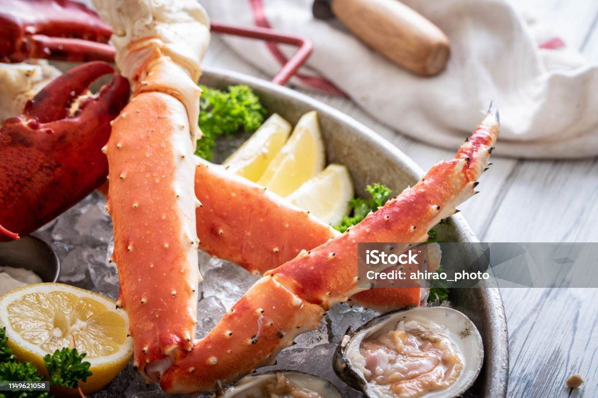

Crab Recipes

These crab tartlets have long since been a family favorite and are requested often at holiday get togethers.
INGREDIENTS
- BISCUIT
CREAM CHEESE
- CHEDDAR CHEESE
- CRAB MEAT
- MAYONNAISE
STEPS
- Preheat oven to 375 degrees F (190 degrees C). Lightly grease 12 tartlet pans.
- Divide rolls in half and press into the prepared tartlet pans. Set aside.
- In a large bowl, combine cream cheese, crab, mayonnaise, Parmesan cheese, Cheddar cheese, green onions and Worcestershire sauce. Spoon 1 teaspoon of mixture into tarts and garnish with paprika.
- Bake at 375 degrees F (190 degrees C) for 15 to 20 minutes, or until light brown. These freeze wonderfully. Just reheat before serving.